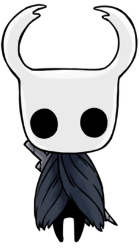
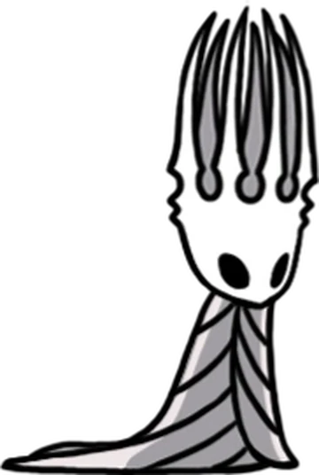
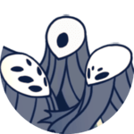
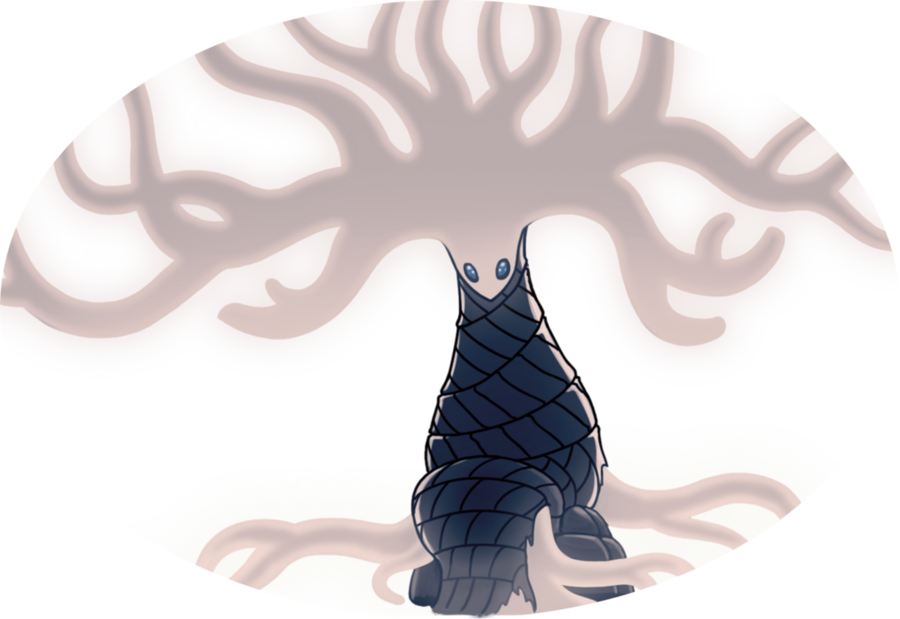
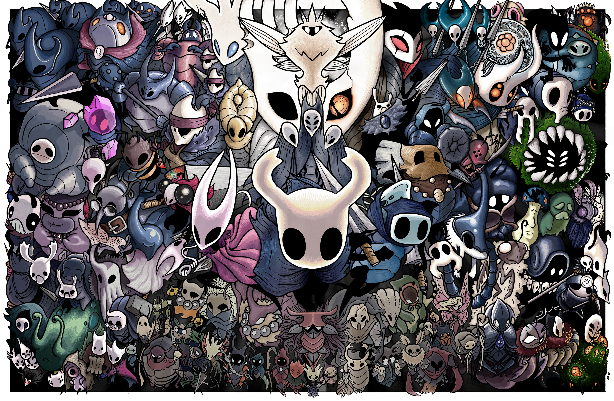
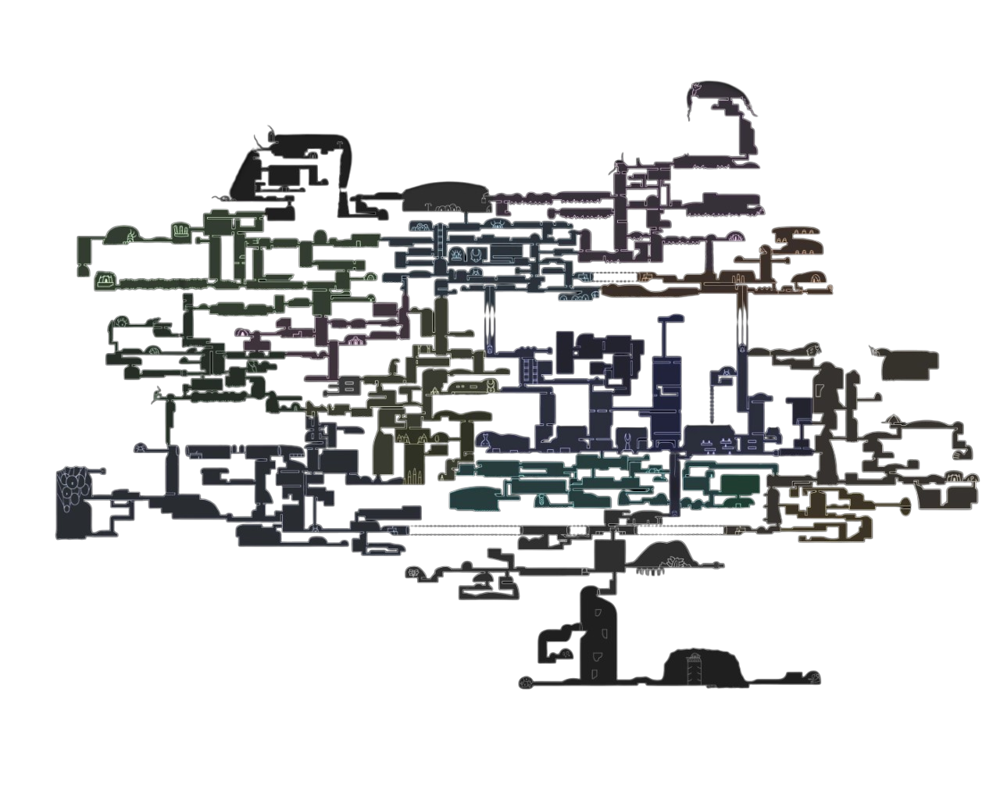

Hollow Knight
História
Hollow Knight se passa em Hallownest, um antigo reino subterrâneo habitado por insetos sencientes. Você controla o Knight, um pequeno e silencioso guerreiro, que chega à cidade de Dirtmouth e desce nas ruínas em busca de respostas. O núcleo do enredo é uma praga mental chamada Infection, originada da entidade conhecida como Radiance, que invade e corrompe os insetos deixando-os violentos e enlouquecidos. O reino foi fundado e moldado pelo Pale King, que tentou conter a Radiance criando “Vessels” para selá-la, mas algo deu errado. Ao longo do jogo o jogador explora áreas interconectadas, descobre fragmentos de lore, enfrenta inimigos e chefes, e decide qual final obter ao confrontar a fonte da Infecção.
Objetivos
Explorar Hallownest, reunir mapas e habilidades, derrotar chefes, coletar charms e recursos, e descobrir por pistas e encontros a verdade por trás da queda do reino.
Personagens Principais

O Cavaleiro
Personagem jogável; um Vessel silencioso nascido no Abismo, com ligação ao Void. Sua jornada é descobrir quem é e o papel que tem em Hallownest.

Hornet
Guerreira ágil e importante NPC/chef (também aparece em Silksong). Serve como rival/aliada em momentos; tem ligação familiar com o Pale King.

O Rei Pálido
Antigo governante/higher being que elevou Hallownest e criou os Vessels; suas ações explicam grande parte da história.

Radiance
Entidade antiga (adoração das mariposas) que alimentou os sonhos e que acabou sendo a origem da Infecção.

Os Sonhadores
Três personagens que atuam como selos vivos do templo. Derrotá-los abre o caminho ao confronto final.

A Dama Branca
Figura ligada ao Void; tem papel emocional/lore importante (mãe de Vessels)

NPCs Notáveis
Iselda/Cornifer (mapas), Salubra (vendedora de charms e bênçãos), Zote/Quirrel/Cloth (companheiros/figuras do caminho) — cada um adiciona cor, quests e fragmentos de lore.
Mapa do Jogo
